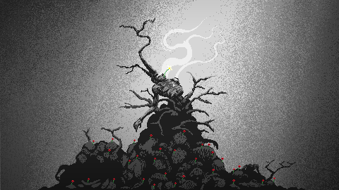

Demo available
Over The Hills All Gods Lie
The player awakens to a Fae, a creature whispered to be of a godlike nature. It proposes a deal that would give both a chance to reach their end, an escape from the rooting, be it life or death. It's then the player's will to accept the deal or not: to kill the mountain god.
Play the demo Demo Release Trailer
Preproduction beneficiary of the 2026 Video Game Development Competition, Ministry of Culture of Peru.